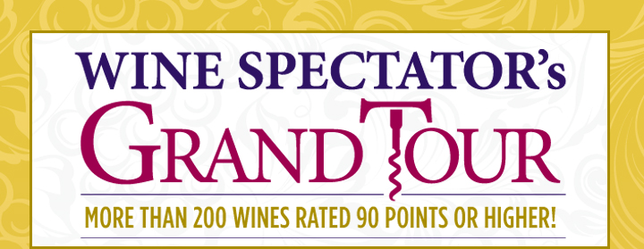
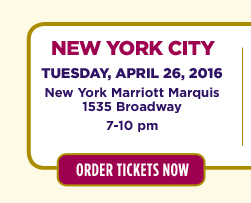
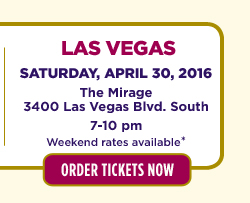
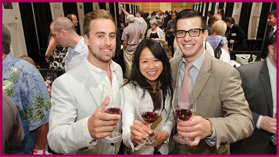

<!DOCTYPE html PUBLIC "-//W3C//DTD XHTML 1.0 Transitional//EN" "http://www.w3.org/TR/xhtml1/DTD/xhtml1-transitional.dtd">
<html xmlns="http://www.w3.org/1999/xhtml">

<head>

    <meta http-equiv="Content-Type" content="text/html; charset=utf-8" />
    <meta name="title" content="Grand Tour 2016 | Wine Spectator" />
	<meta name="description" content="Wine Spectator Grand Tour 2016, Experience The World&#039;s Finest Wines" />
	<meta name="robots" content="index, follow" />
	<meta name="language" content="en" />

    <title>Grand Tour 2016 | Wine Spectator</title>


</head>

	<body>


<!-- ========== Body ========== -->
<div id="wrapper" class="addclear">


<link href="/css/common/style.css" rel="stylesheet" type="text/css" media="screen" />
<style type="text/css">
body{ background:#fefae5; }
#content{ width:711px; margin:0 auto; }
.nav{ background:#d3b228; text-align:center; width: 720px;}
.nav img{ margin:0 9px; }
h1, h2, h3, h4, h5, h6, p{ text-align:center; margin-bottom:14px; }
h1 {font-size:2em; margin-top:20px;}
h2 {font-size:1.6em;}
h3 {font-size:1.4em;}
h4, h5 {font-size:1.2em;}
h6, p{font-size:1.1em;}
h2{ margin-top:20px; }
h1{ color:#2e1263; font-weight:normal; }
h6{ color:#000; font-weight:normal; margin-top:10px; }
hr{ color:#9e004f; background:#9e004f; height:1px; border:0; border-collapse:collapse; width:20%; text-align:center; margin-left:auto; margin-right:auto}
td p{ text-align:left; }

.scheduleBox a, .scheduleBox span{ float:left; height:181px; margin:0 3px;width:224px; display:block; text-decoration:none; position:relative; }
.scheduleBox a.firstbox, .scheduleBox span.firstbox{ margin-left:15px; }
.scheduleBox a p, .scheduleBox span p{ margin-top:47px; margin-right:15px; font-size: 17px;}
.color-purple{ color:#2e1263; font-family: Open Sans; font-size: 20px;}
.color-redishpurple{ color:#9e004f;}
.ub{ font-weight:normal; }
.allcaps{ text-transform:capitalize; }
.allUps{ text-transform:uppercase; }
.clearall{ float:none; clear:both; }
.textrightwsgt{ display:block; width:250px; text-align:center; float:right; }
.done { margin:0; padding:6px 3px; background:#f00; color:#fff; position:absolute; top:10px;
-moz-transform:rotate(-45deg); -webkit-transform:rotate(-45deg); -o-transform:rotate(-45deg); -ms-transform:rotate(-45deg); filter:progid:DXImageTransform.Microsoft.BasicImage(rotation=-0.5); transform:rotate(-45deg);}
/*
#ny{margin-top:50px; margin-right:0; margin-bottom:0; margin-left:0;}
#dc{margin-top:50px; margin-right:0; margin-bottom:0; margin-left:0;}
#la{margin-top:50px; margin-right:0; margin-bottom:0; margin-left:0;}
*/
.rates{font-size:11px; margin-top:0px; margin-right:0; margin-bottom:0; margin-left:0px; font-weight: bold;}
#list{ font-family: Arial; font-weight: bold; font-size: 18px;}
#mirage{font-family: Arial; font-weight: Bold; font-size: 14px; color:#32146b !important}
</style>

<div id="content">
	<div class="header">
    	
    </div>
    <div class="nav">
    	<!-- <a href="wineries.html" title="Participating Wineries"></a> -->
    </div>
    <div class="content">
    	
        <p class="color-purple" style="font-family:Arial; font-size:25px; font-family:Open Sans;">More than two hundred of the world’s finest wineries<br/> will pour one of their best wines at each stop</p>

        <p class="color-purple" style="font-family:Arial; font-size:25px; font-family:Open Sans;">Select one of <em>WINE SPECTATOR</em>'s Grand Tour<br /> cities near you and enjoy a wine tasting you will<br/> remember for a long time to come!</p>
       
    	<div class="container">
        	<a href="http://www.etix.com/ticket/p/7859324/grand-tour-new-york--new-york-grand-tour-new-yorkny-marriott-marquis-"></a>
            <a href="http://www.etix.com/ticket/p/6168325/grand-tour-dc--washington-grand-tour-dc-ronald-reagan-building"></a> 
            <a href="http://www.etix.com/ticket/p/2237557/grand-tour-las-vegas-las-vegas-grand-tour-las-vegas-the-mirage-"></a>
        </div>
		
		<h2 class="ub color-redishpurple" style="font-family:Arial; font-size:18px; font-weight:bold;">ALL TICKETS ARE $325 EACH<br /><small>You will receive an immediate e-ticket.</small></h2>
		<h2 class="ub color-redishpurple" style="font-family:Arial; font-size:18px; font-weight:bold; margin-bottom: 20px;">After March 26, tickets are $395 each. <br /><small>Take this early opportunity to buy your tickets.</small></h2>

		<div id="photo-section" align="center">			        
				
		</div>
		
		<h2 class="ub color-redishpurple" style="font-family:Arial; font-size:28px; font-weight:bold; margin-bottom: 15px; text-transform: uppercase;">All wines are rated 90 points<br/> or higher by <em>WINE SPECTATOR</em></h2>
        
        <h3 class="color-purple">Meet and mingle with many winery owners and/or winemakers</h3><hr />
        <h3 class="color-purple">Taste wines that are hard to find—discover new favorites</h3><hr />
        <h3 class="color-purple">Enjoy a light buffet to complement your evening</h3><hr />
        <h3 class="color-purple">A souvenir Riedel&reg; tasting glass is included.</h3>
        <br />
        
        <h6 id="list" style="margin-top:0; margin-bottom: 25px;">List of participating wineries available February 15.</h6>
        
        <p id="mirage">*Stay for the weekend at The Mirage. Special Grand Tour rates are available. Call 1-800-374-9000 or go to <a href="https://resweb.passkey.com/go/WineSpectator2016" target="_blank" style="color:#32146b !important;">https://resweb.passkey.com/go/WineSpectator2016</a>.</p>
        
        <p style="color: #9e004f;"><strong>For questions, email: <a href="mailto:events@mshanken.com" target="_blank" style="color: #9e004f; text-decoration:none;">events@mshanken.com</a></strong></p>
        
        <!--
<div id="photo-section" align="center">
			
        </div>
-->
        
        <p style="font-size: 15px;"><strong style="font-size: 13px; font-family:Arial; text-transform:uppercase;">NEW YORK:</strong> A full refund is available until April 18, 2016. A 50% refund is available from April 19-25. After that date there are no refunds or exchanges. All tickets are subject to availability.</p>

        <p style="font-size: 15px;"><strong style="font-size: 13px; font-family:Arial; text-transform:uppercase;">WASHINGTON D.C.:</strong> A full refund is available until April 20, 2016. A 50% refund is available from April 21-27. After that date there are no refunds or exchanges. All tickets are subject to availability. </p> 

        <p style="font-size: 15px;"><strong style="font-size: 13px; font-family:Arial; text-transform:uppercase;">LAS VEGAS:</strong> A full refund is available until April 22, 2016. A 50% refund is available from April 23-29. After that date there are no refunds or exchanges. All tickets are subject to availability.</p>
        
        <p style="font-size: 15px;">A portion of net proceeds from the Grand Tour benefits the <em>Wine Spectator</em> Scholarship Foundation, which supports scholarships and grants to students pursuing careers in the wine industry.</p>
        
        
        <p>Must be 21 or older to attend. Seminar sponsor reserves the right to refuse admission to any applicant.</p>
        <p><br /><small>Copyright &copy; 2016 Wine Spectator Online</small></p>
    </div>
</div>


</div><!-- END: wrapper -->
<!-- ========== Body ========== -->


<script type="text/javascript">

var _gaq = _gaq || [];
var pluginUrl = '//www.google-analytics.com/plugins/ga/inpage_linkid.js';
_gaq.push(['_require', 'inpage_linkid', pluginUrl]);
_gaq.push(['_setAccount', 'UA-23484466-5']);
_gaq.push(['_setDomainName', 'winespectator.com']);
_gaq.push(['_setCustomVar',1,'Channel','homepage_grandtour',3]);  
_gaq.push(['_setCustomVar',2,'Member Type','ANON',1]);
_gaq.push(['_setCustomVar',3,'Channel Top','homepage',3]);
_gaq.push(['_trackPageview']); 


(function() {
var ga = document.createElement('script'); ga.type = 'text/javascript'; ga.async = true;
ga.src = ('https:' == document.location.protocol ? 'https://ssl' : 'http://www') + '.google-analytics.com/ga.js';
var s = document.getElementsByTagName('script')[0]; s.parentNode.insertBefore(ga, s);
})();

</script>  
        
        

<!-- Site: help / Zone: index -->


</body>
</html>

